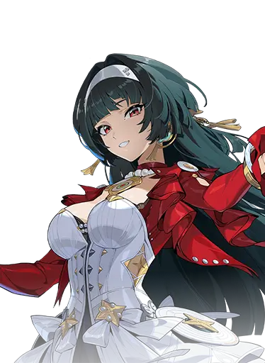
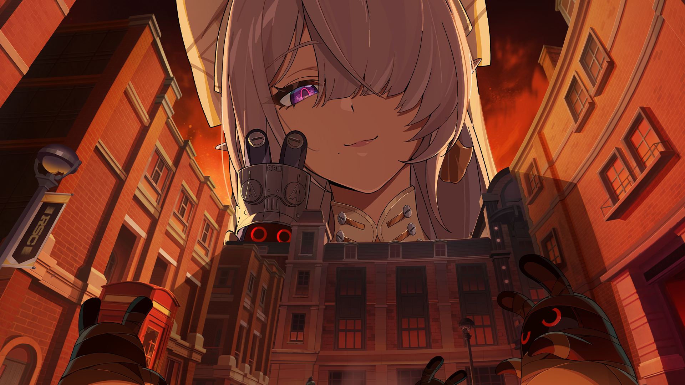
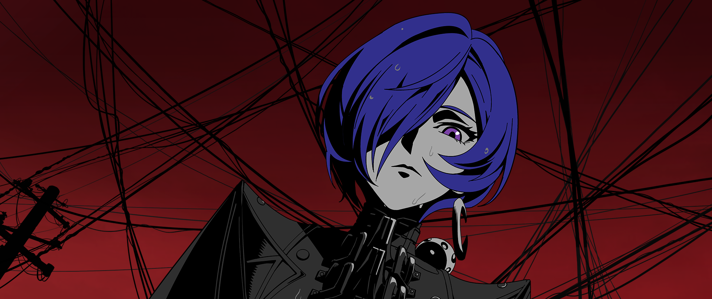
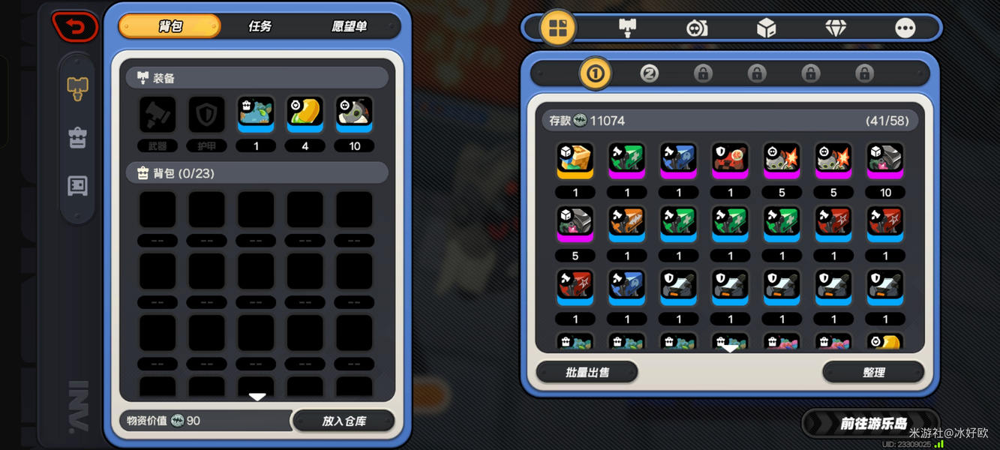
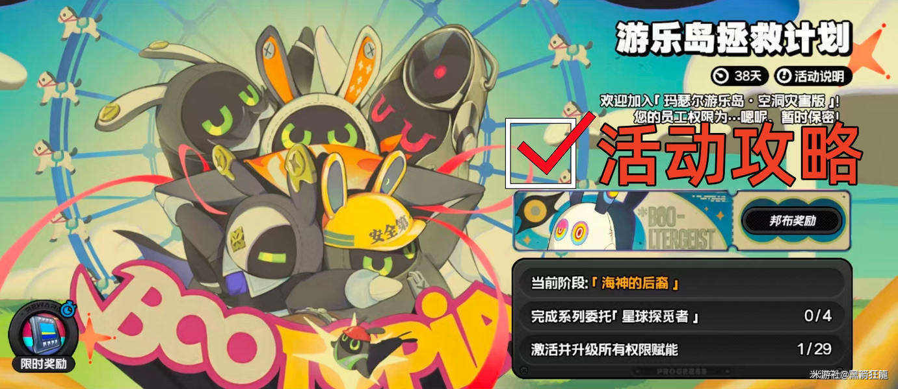
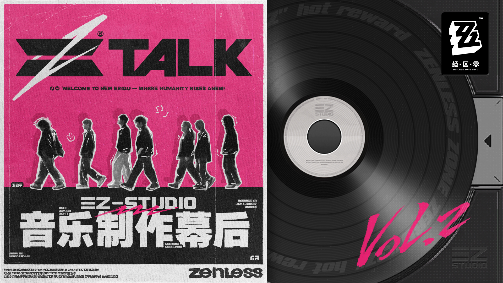

当前线上
- 底色 #18171a 暗场，标题 FangSong 宋体
- 强调色只有 #fbd83f 黄 + #2ddcdd 青
- 五个区块无编号、无斜切几何
成本：0，这是现状基线。
成本：0，这是现状基线。
成本：中低。只加编号轴与装饰层，配色和字体不动，正式站改一份 CSS 加少量结构即可，回滚容易。
成本：高。全站配色令牌、字体、卡片几何都要重做，暗色下的图片压暗/veil 处理全部失效，多页联动改动大，回滚代价高。
三个方向渲染同一套真实内容骨架（影像首屏 / 直接查档 / 精选代理人 / 档案卷轴 / 来源与边界），文案取自现有 index.html 与本地档案数据，仅视觉层不同。
HOOXI / ZENLESS STORY VIDEO ARCHIVE
按版本补剧情，按代理人追关联。先定位片段，再前往来源观看。
 01 / 04
01 / 04
按剧情、代理人或名字进入正式档案。
按版本与章节找空洞行动与世界观媒体。
57 名代理人、18 个阵营，可搜可筛。
直接定位代理人，再看相关影像与阵营关系。
从角色进入相关剧情、阵营和影像；浏览全部代理人。
 安比·德玛拉狡兔屋 · 电 · 击破从不谈起自己的故事，仿佛没有过去，是个谜一般…
安比·德玛拉狡兔屋 · 电 · 击破从不谈起自己的故事，仿佛没有过去，是个谜一般…
耀嘉音天琴座 · 以太 · 支援[小姐，你该起床了，我们马上就要迟到——好，…主线、活动与幕后各取近期记录，完整筛选仍在正式页。
主线正式页活动正式页幕后正式页

官方媒体维琳娜角色PV | 拟剧论维琳娜 的角色宣传影像 · 副题「拟剧论」
官方媒体普罗米娅角色PV | 雨夜独白普罗米娅 的角色宣传影像 · 副题「雨夜独白」
2.8 · 活动索引游乐岛速撤流发布日期：2026.5.7 · 作者：冰好欧
2.8 · 活动索引【2.8攻略征集】玛瑟尔游乐岛海岛物资宝箱位置（持续更新中）发布日期：2026.5.7 · 作者：黑箭狂龍 幕后记录ZTALK| 第三季爆料特别篇ZTALK| 第三季爆料特别篇
幕后记录ZTALK| 第三季爆料特别篇ZTALK| 第三季爆料特别篇
幕后记录ZTALK | 三Z音乐制作幕后 Vol. 2ZTALK | 三Z音乐制作幕后 Vol. 2正式档案可搜索、可分享；录像店只是可跳过的观看入口。
这是 Hooxi 个人品牌下的《绝区零》剧情视频档案与角色关系导航站，与米哈游、HoYoverse 无隶属。
银幕使用本地登记的 Random Play 主视觉，以及星见雅、浅羽悠真、爱芮的本地官方 gallery 影画；不虚构 Keyart 外部来源。
页面所用立绘、影画与截图版权归米哈游所有；各正式档案页继续提供对应来源与核验状态。
Hooxi B站主页 ↗